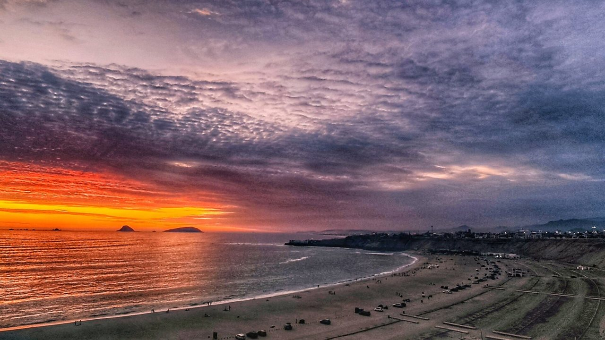
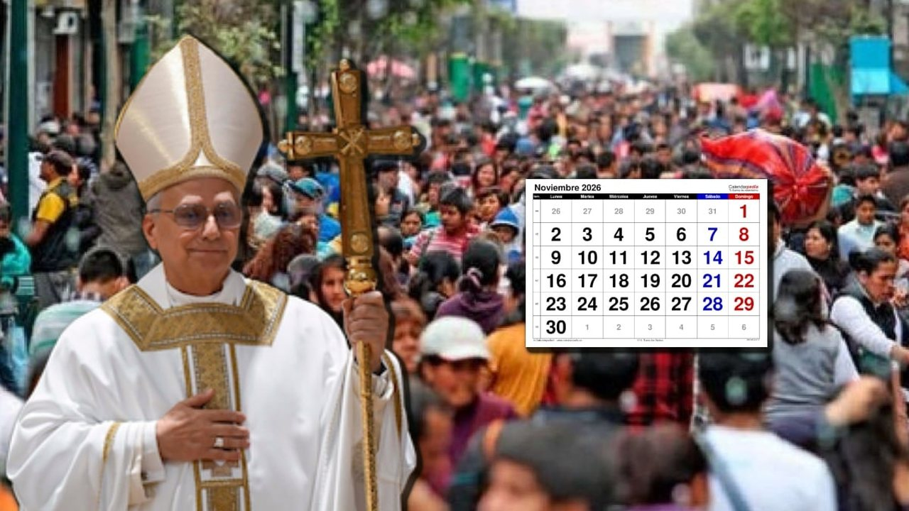
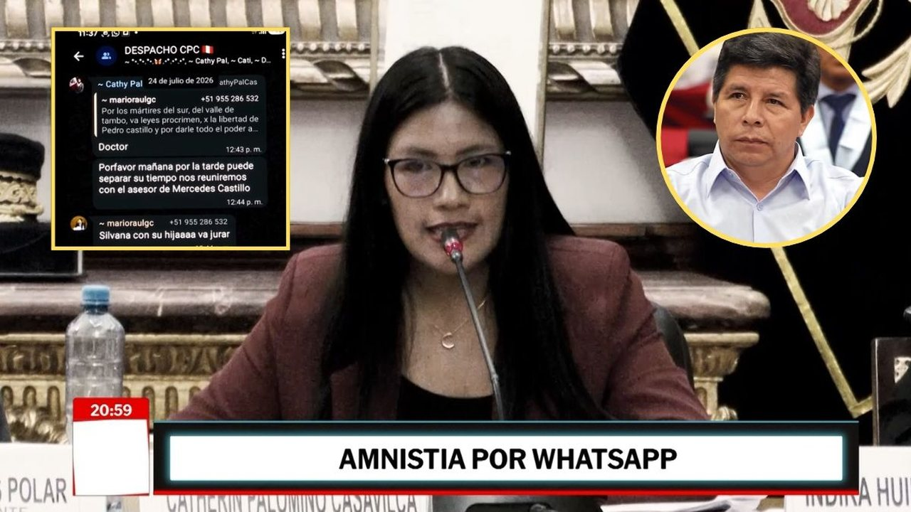
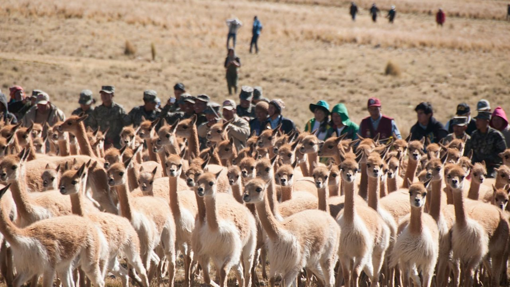
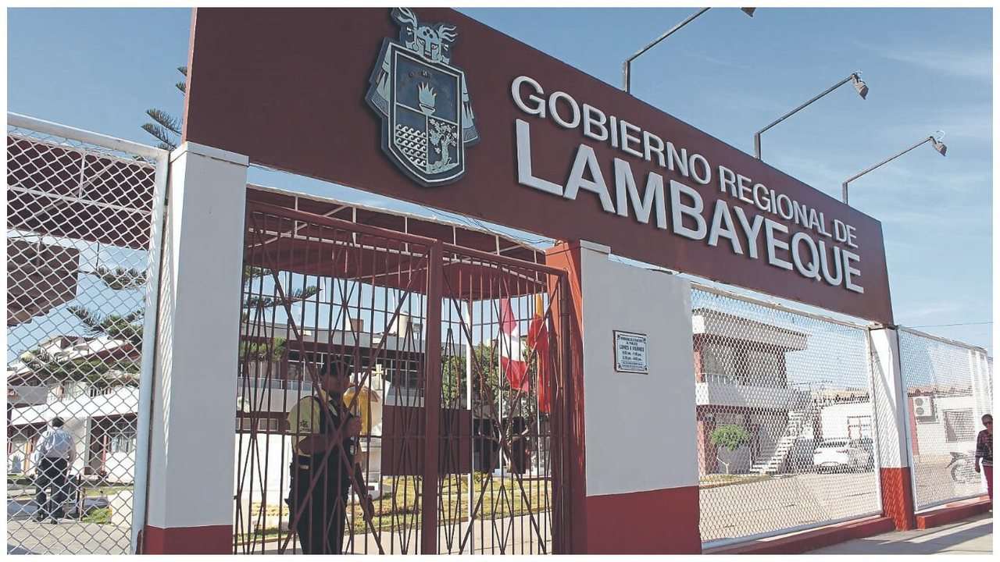
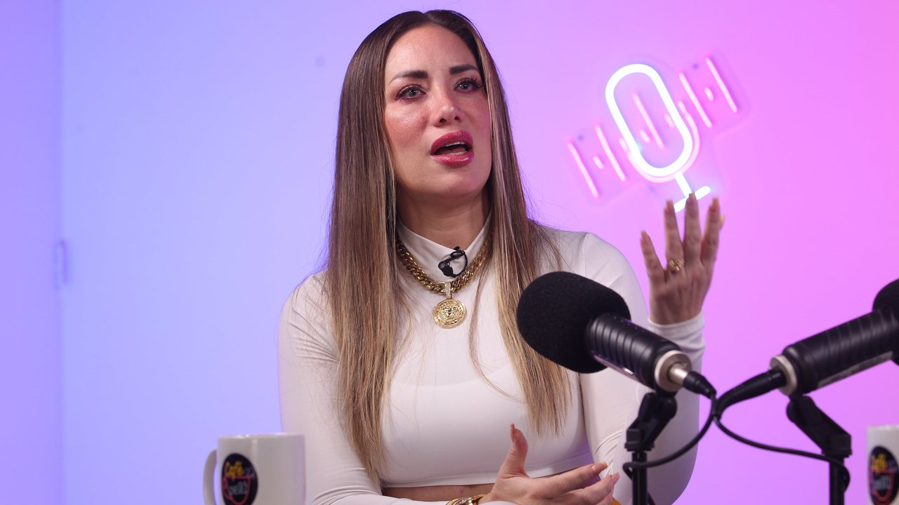

Explicó los motivos por los que decidió que Lamine Yamal permaneciera en Barcelona y no viajara con el resto de sus compañeros a la capital checa. “Lamine tenía un proceso, se hizo daño en el último partido.






Explicó los motivos por los que decidió que Lamine Yamal permaneciera en Barcelona y no viajara con el resto de sus compañeros a la capital checa. “Lamine tenía un proceso, se hizo daño en el último partido.
Parque La Molina es un complejo de concepto abierto de 5 niveles que evita la sensación de sótano, integrando una plaza central al aire libre. Casi dos años después, Parque La Molina reporta crecimiento en ventas y visitas, y suma nuevas marcas a su oferta.
La Autoridad de Transporte Urbano para Lima y Callao (ATU) anunció refuerzos y modificaciones en el transporte público por las actividades del papa León catorce en el Centro Histórico de Lima.
Lima amaneció este lunes con calles y avenidas mojadas por las lloviznas registradas durante las primeras horas del día. Durante las primeras horas del lunes, Lima registró una temperatura de 23 grados, una sensación térmica de 25 grados y una humedad relativa de 88 por ciento.
Agentes de la Dirección Antidrogas (Dirandro) y de la Dirección General de Inteligencia (Digimin) incautaron 620 kilos de droga en un inmueble del distrito limeño de Villa El Salvador ( VES ), al sur de la capital.
Desde este miércoles 11 de noviembre, Diario Correo acompañará el recorrido del sumo pontífice por el Perú con programas de análisis, transmisiones, enviados especiales y corresponsales en distintas regiones del país.
¿Cuándo empiezan los días libres NO laborables por la llegada del Papa León catorce al Perú? Senamhi revela el pronóstico para estas ciudades Seguir en Guardar Miles de personas se preparan para participar en las actividades del papa León catorce en Lima.
La advertencia fue realizada este viernes 6 de noviembre por el secretario del Tesoro estadounidense, Scott Bessent, durante una conversación con el viceprimer ministro chino, He Lifeng, en la que participaron representantes de ambos gobiernos para abordar el estado de las relaciones económicas y comerciales.
La fotografía actual de los embalses ofrece un punto de partida para abordar los retos asociados al uso del agua en España. Los embalses de agua están a su 56,03 por ciento de capacidad (Europa Press) Andalucía: 68,51 por ciento.
Cada edición dura menos de dos minutos. En la web tienes el resumen de cada historia y el enlace directo al medio original para leerla completa.
Conoce Olfatecho →